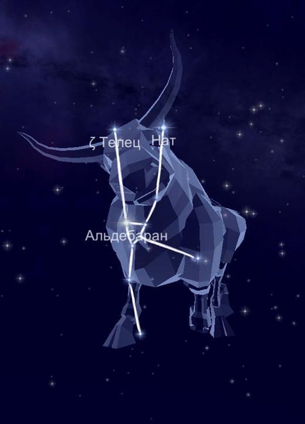

Созвездие Телец расположилось на просторах между Овном и Близнецами. Поскольку охватывает 797 квадратных градусов, стоит на 17 месте по размеру среди всех звёздных частей неба. Между тем, также граничит с Возничим, Китом, Орионом, Персеем и Эриданом.
На самом деле, созвездие Телец не только одно из самых больших, но и одно из популярнейших. В культурах многих народов упоминается бык.
Миф о происхождении.
Согласно легенде, Телец - это бык, в которого превратился Юпитер (Зевс), очарованный красотой Европы, принцессы и дочери финикийского царя Агенора. Отказавшись от величия своего скипетра, отец и правитель богов, метающий взмахом руки испепеляющие молнии, сотрясающий кивком головы вселенную, принял облик быка; и, затерявшись среди других волов, он мычал и пасся на лугу. Его шкура стала белой, как чистый снег. Принцесса Европа была поражена красотой и добротой быка и они проводили вместе много времени на берегу моря. Европа забралась на спину быку и он уплыл вместе с ней в море, и отвез ее на Крит, и открыл себя.
Звёзды, образующие созвездие Телец.
Самая яркая на участке — это Альфа — Альдебаран. Это тринадцатая ярчайшая звезда во всём небе.
Вторая по яркости Бета — голубой. Название Эль-Нат означает бодающий.
На третьем месте стоит Эта — Альциона, которая отображает дочь Атланта.
Затем следует Дзета.
Лямбда выражена тройной системой.
Эпсилон — Аин, то есть второй глаз быка, является оранжевым гигантом. Гамма — гигант жёлтого цвета, отображает первую Гиаду. Кси — кратная система из карликовых компонентов главной последовательности.
А вот Дельта в созвездии принадлежит сразу трём системам. Тета — двойная звезда.
Ню относится к карликам белого цвета.
Тау, Каппа и Ипсилон являются кратными системами,.
Мю — голубой субгигант.
Омикрон принадлежит к жёлтым гигантским светилам.
Так как небесный участок лежит в зоне видимости на широте от +89 до -59, то полностью доступно для жителей России. Наиболее благоприятные условия для этого отмечаются в ноябре и декабре.
|

|